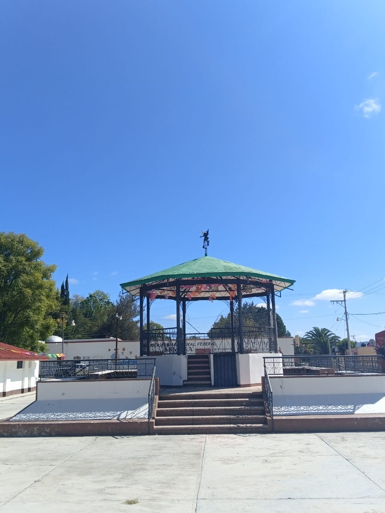
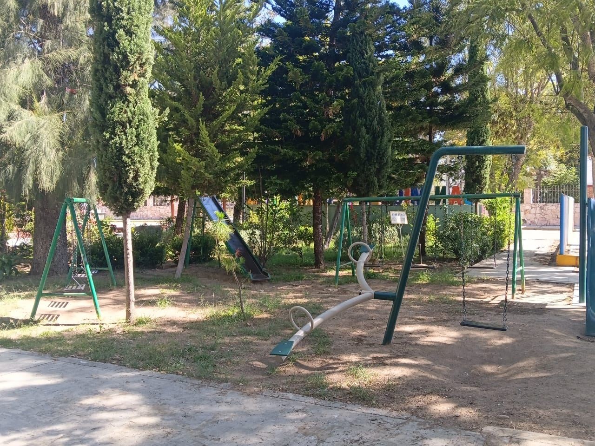
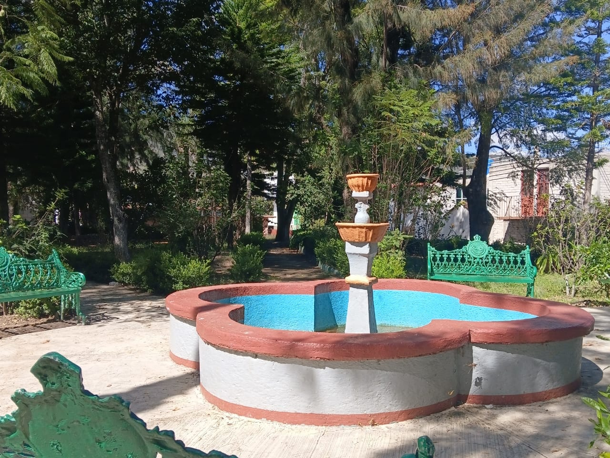
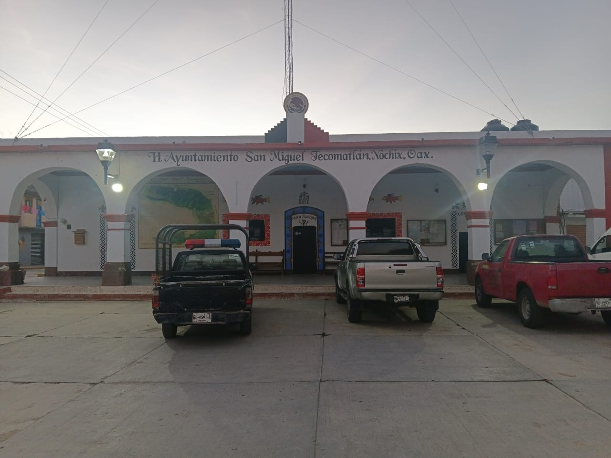
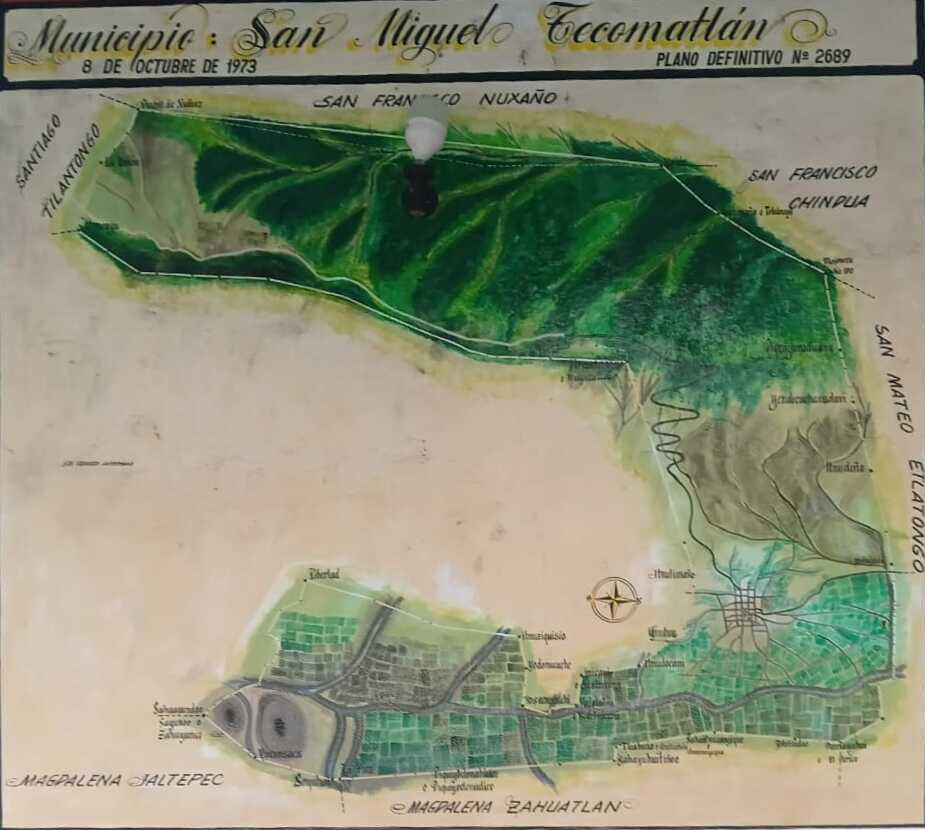
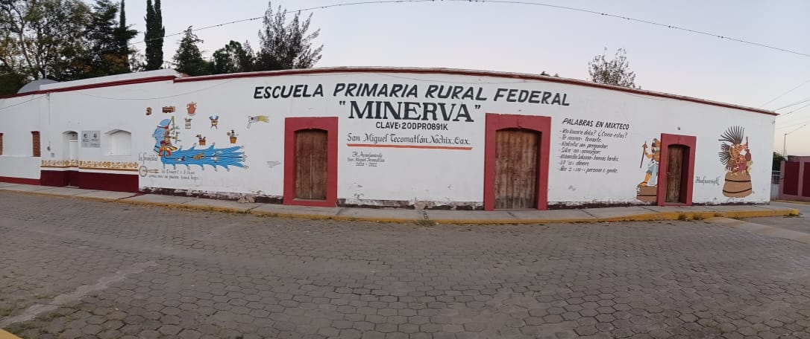

Oaxaca · México
Centro
El corazón de nuestra comunidad
El centro de San Miguel Tecomatlán es un espacio donde se encuentran la historia, la convivencia y la identidad de sus habitantes. Sus calles, espacios públicos y construcciones reflejan la esencia de un pueblo mixteco que conserva con orgullo sus tradiciones y costumbres.
Es aquí donde transcurre buena parte de la vida comunitaria, donde las familias se reúnen y donde las celebraciones y actividades fortalecen los lazos entre sus habitantes. Un lugar que invita a recorrer sus rincones y descubrir la tranquilidad y hospitalidad que caracterizan a esta comunidad oaxaqueña.

Parque


Municipio
Conoce nuestro territorio y ubicación
San Miguel Tecomatlán forma parte de la región Mixteca del estado de Oaxaca. A través de este mapa podrás conocer mejor la ubicación de nuestro municipio, identificar sus límites territoriales y descubrir su relación con las comunidades y localidades que lo rodean.
Explora su ubicación geográfica y conoce un poco más sobre el territorio que da identidad a nuestra comunidad. Un punto de partida para quienes desean visitarnos y descubrir los paisajes, las tradiciones y la riqueza cultural de esta región.


Primaria
Un espacio para aprender y crecer
La escuela primaria es uno de los espacios fundamentales para el desarrollo de San Miguel Tecomatlán. En sus aulas, niñas y niños construyen sus primeros conocimientos, desarrollan habilidades y comienzan a formar parte activa de la vida de su comunidad.
Además de ser un lugar de aprendizaje, representa un espacio de convivencia donde se fortalecen los valores, la amistad y el sentido de pertenencia. La educación es una parte importante del crecimiento de nuestra población y una base para construir nuevas oportunidades para las futuras generaciones.
